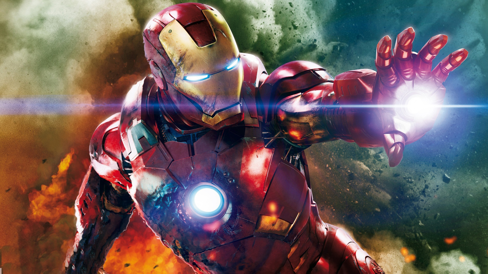
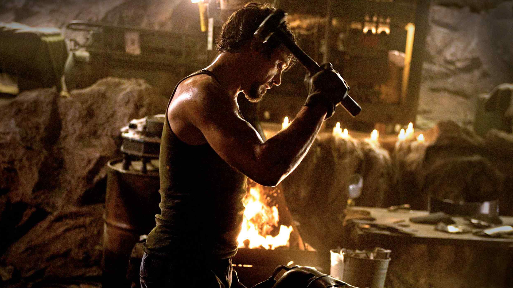
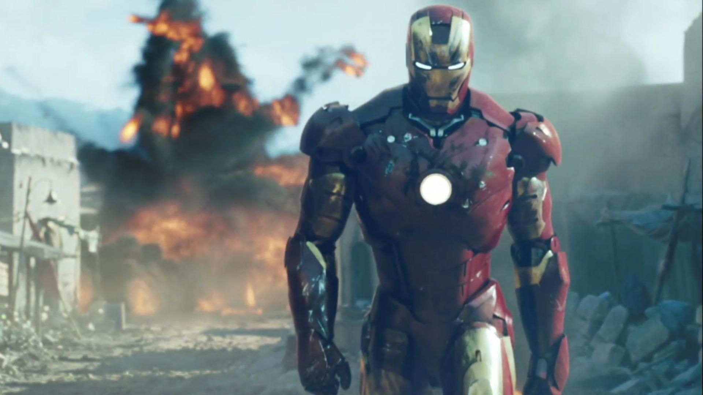
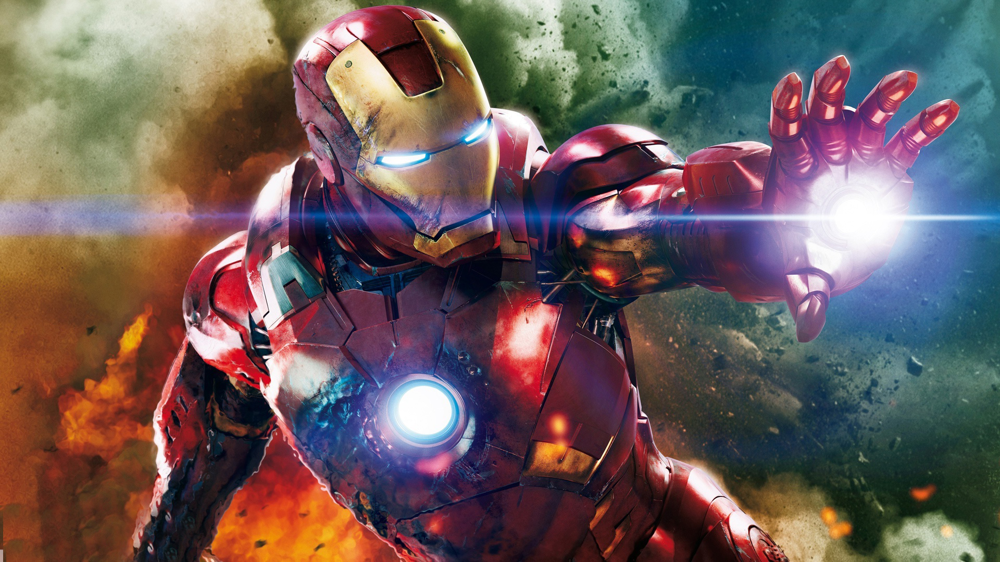
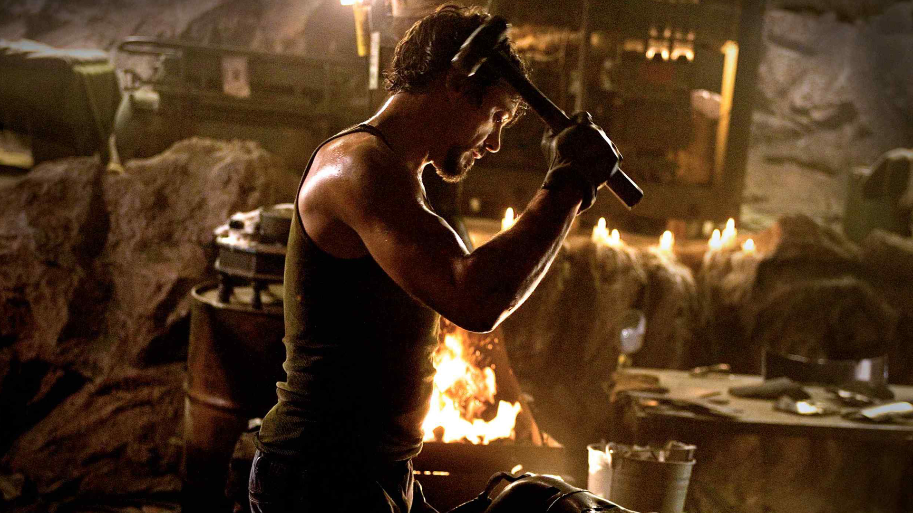
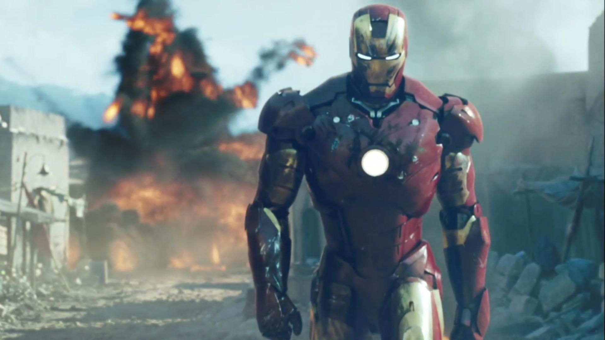

Slavná komiksová postava Iron Man patøí mezi nejhýèkanìjší superhrdiny sdružené pod køídly giganta jménem Marvel.
Pøesto (nebo možná právì proto) se až teï mohl pøidat ke svým sourozencùm Spider-Manovi, Fantastické ètyøce a
X-Menùm, kteøí o sobì mohou hrdì prohlašovat, že o nich natoèili film. Neèekejte ovšem dalšího spasitele lidstva, kterému
k jeho mimoøádným schopnostem pomohlo pavouèí kousnutí nebo ozáøení. Muž se železnou maskou, obèanským jménem
Tony Stark, se ke své výjimeènosti "poctivì" propracoval.
Uvozovky jsou namístì, Tony se živí jako VIP výrobce a dodavatel technologicky vyspìlých zbraní pro americkou armádu a
jeho životní filozofii vystihuje vìta: Nejlepší zbraní je ta, ze které staèí vystøelit jen jednou. Na cestì z povedené prezentace
nejnovìjší zbranì hromadného nièení pro armádní špièky ho na horké afgánské pùdì unese jistá teroristická skupina. Muž,
kterému ležela Amerika u nohou, se tak rázem ocitá v držení lidí, kteøí po nìm chtìjí jediné - aby zaèal vyrábìt zbranì pro nì.
Díky své vynalézavosti, výjimeènému intelektu a schopnosti improvizovat si Tony v zajetí vyrobí "brnìní", které mu pomùže
dostat se na svobodu. Tehdy také dostane nápad tenhle improvizovaný kovový oblek ještì výraznì vylepšit. A tak se zrodí
Iron Man.(oficiální text distributora)


 




